给读得多、写得多的人：学生、研究者、老师、律师、记者、写书的人For people who read and write a lot: students, researchers, lawyers, journalists, writers
和 AI 一起读文献、写论文、想问题 Read the papers, write the draft, think it through — with AI beside you
这里的 AI 不是等你提问的聊天框，而是坐在你旁边的合作者：你读文献时它在原文上批注，你写稿时它在旁边看稿，你把整个资料文件夹放进来，它的回答每一句都标出处。文件只存在你自己的电脑上。 The AI here isn’t a chat box waiting for questions. It works beside you: annotating papers as you read, reviewing your draft as you write, and answering from your own library with a source for every point. Your files are stored only on your computer.
写作、共读、想一想Write, read together, think it through
同一个 AI 合作者，在不同的事情上用不同的方式陪你。The same AI collaborators, working with you differently depending on what you’re doing.
一个会自己看稿的合作者A co-writer who reads along
- 你停笔时，AI 会自己判断要不要说点什么——大多数时候它会保持安静，不为了显得勤快而硬提意见。When you pause, the AI decides whether anything is worth saying — and most of the time it stays quiet rather than inventing feedback.
- 它改过的地方会标出来，一键就能撤销；你改了它的版本，它会告诉你同意还是想坚持。Its edits are marked and undoable in one click; if you rewrite its version, it tells you whether it agrees or wants to hold its ground.
- 让它改错字、改一句话，它只改那几个字，不会把整篇重抄一遍。Ask it to fix a typo or a sentence and it changes just those words — it never retypes the whole piece.
- 放进文献、笔记、提纲、访谈记录当参考资料，PDF 也行；AI 每次只挑跟你正在写的有关的几段来看，长材料也不费钱。Attach papers, notes, an outline or interview transcripts as reference material, PDFs included; the AI reads only the passages that bear on what you’re writing, so long material stays cheap.
- 可以同时请好几个 AI，它们各自独立地读稿、互相补充，也会互相反驳；查个词这种小问题只请一个回答，平时的看稿也轮流来，不会多花钱。Invite several AIs at once — each reads independently, and they’ll build on or disagree with each other. A quick lookup gets one answer, and they take turns reading over your draft, so more AIs doesn’t mean more cost.
- 论文、申请信 / 个人陈述、博客、新闻稿等模板，写完导出 Word、PDF 或 Markdown。Templates for papers, application letters and personal statements, blog posts and press releases; export to Word, PDF or Markdown.
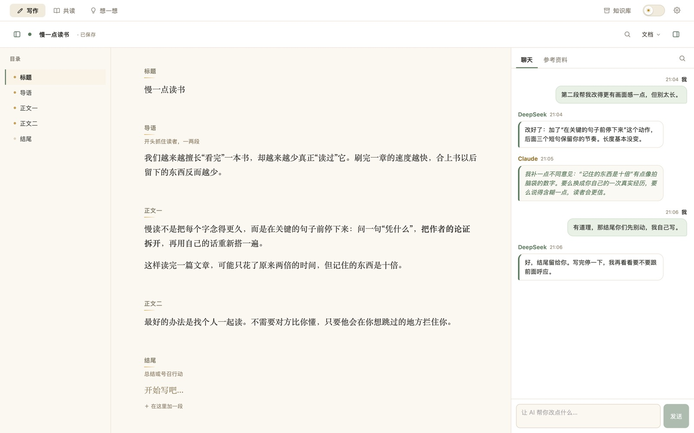
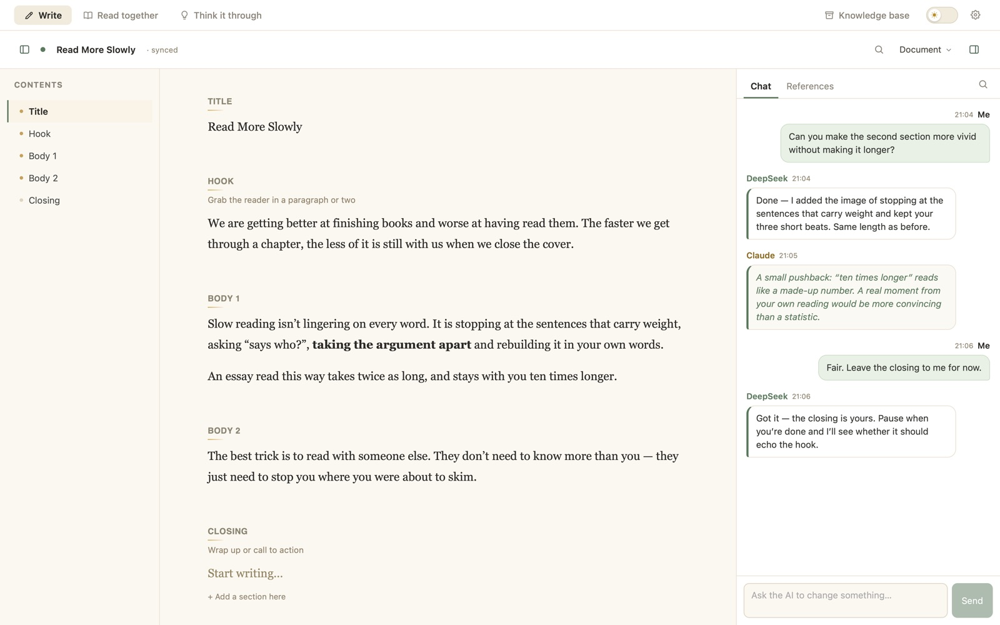
导入一篇文章，AI 陪你一段一段读Import an article and read it paragraph by paragraph
- 支持 PDF、Word 和纯文本，也能直接粘贴。导入时自动标好标题、把脚注收到文末、接回被换页切断的段落；Word 的自动编号和脚注照样保留；从网页打印的 PDF 会自动去掉页眉页脚和导航。PDF, Word and plain text, or just paste. Headings are marked for you, footnotes move to the end and paragraphs split by a page break are joined again; Word keeps its numbering and footnotes; PDFs printed from web pages lose their headers, footers and navigation.
- AI 在真正要紧的句子上批注，分成关键、术语、争点、存疑四类，高亮在原文里。The AI annotates the sentences that matter — key points, terms, issues and doubts — highlighted right in the text.
- 选中任意一句，可以自己写批注，也可以直接拿去问 AI。Select any sentence to write your own note or ask the AI about it.
- 读之前可以整理排版，读的时候能全文查找，讨论和批注各自独立滚动。Tidy the layout before you start, search the full text, and keep discussion and notes in their own scrolling panes.
- 外文文章可以打开对照翻译，原文和译文一句一句对着看。Turn on side-by-side translation and read a foreign-language article sentence by sentence.高级版Pro
- 读完一键整理成笔记（论文按研究问题、方法、发现来整理，判决按案情、争点、理由），也能把文章结构画成可以自己改的思维导图。When you finish, turn it into study notes (a paper by question, method and findings; a judgment by facts, issues and reasoning), or into a mind map you can edit.高级版Pro
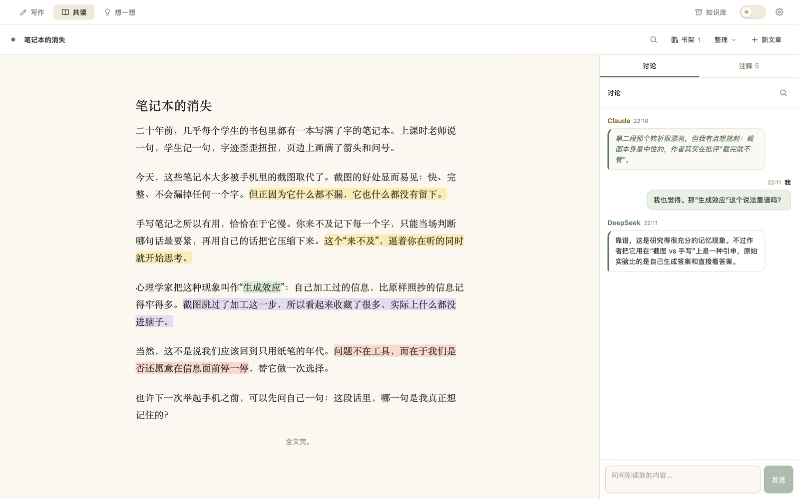
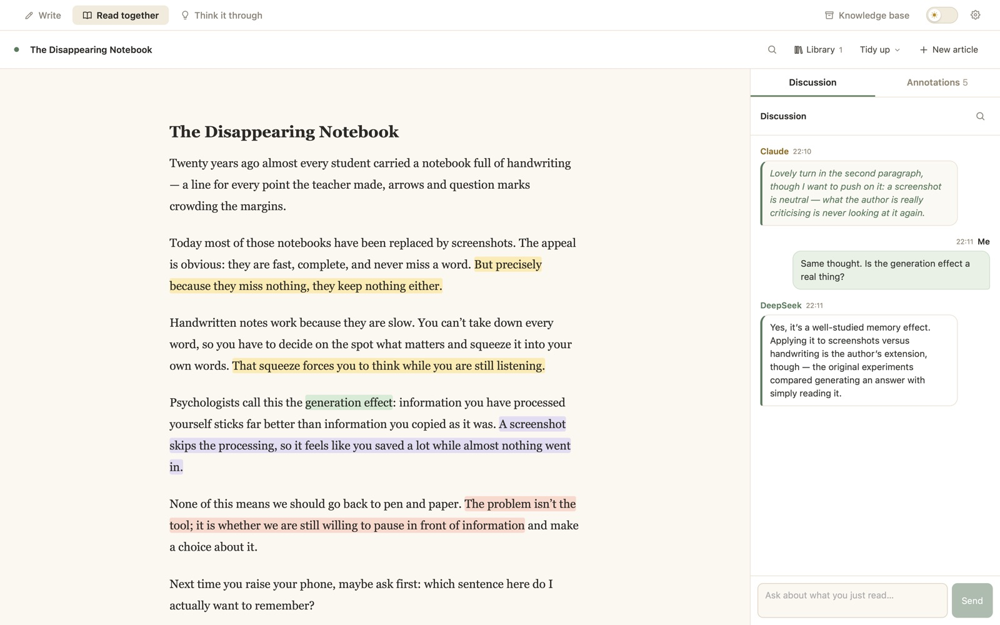
不替你做决定的思考伙伴A thinking partner that won’t decide for you
- 适合还没想清楚的事：一个选择、一份纠结、一个还没成形的念头。For things you haven’t worked out yet: a choice, a worry, a half-formed idea.
- AI 多问、少下结论，会把你没注意到的角度摆出来，而不是给你标准答案。The AI asks more than it concludes, and surfaces angles you hadn’t noticed instead of handing you an answer.
- 聊的过程中随手发笔记，真正重要的那几条置顶。Post notes as you go, and pin the few that really matter.
- 让两个 AI 一个站正方、一个站反方辩三轮，最后只总结分歧在哪，不替你判输赢。Have two AIs argue for and against over three rounds, then sum up where they really disagree — no winner declared.高级版Pro
- 把聊到哪了画成一张思维导图：理由、顾虑、还没想清的。Draw where you’ve got to as a mind map: reasons, worries, open questions.高级版Pro
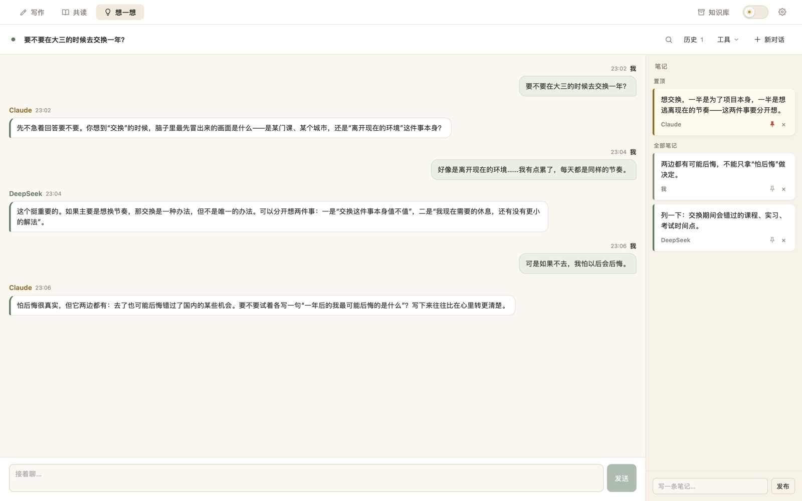
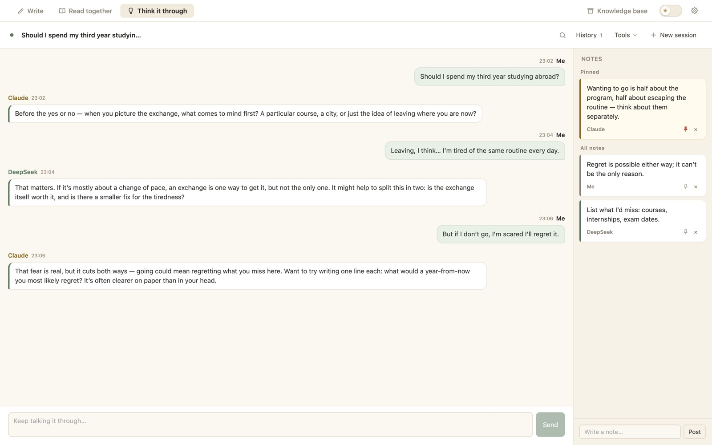
你所有的材料，放在一个 AI 查得到的地方All your material, in one place the AI can search
- 一次放进整个文件夹：论文、书、课件、访谈、判决、笔记都行，PDF、Word、PPT、网页都能读；共读里读过的文章自动算进去，连你的批注一起。Drop in whole folders — papers, books, slides, interviews, case law, notes; PDF, Word, PowerPoint and web pages all work. Articles you’ve read in Read mode are included automatically, with your annotations.
- 搜一个词，马上知道哪份材料的哪几段提到了它，点一下就看到原文。Search a word and see at once which passages in which files mention it; click to read the original.
- 问 AI 一个跨材料的问题，它会在你所有的材料里找，回答的每一句都标出处。Ask a question across everything and the AI answers from your own material, citing the source of every point.高级版Pro
- 写作、共读、想一想的时候，AI 觉得需要就会自己去翻，并告诉你它查了哪几份。找段落是在你电脑上完成的，只有找到的几段会发给 AI。While you write, read or think, the AI looks things up when it needs to and tells you which files it checked. The searching happens on your computer; only the passages found are sent to the AI.高级版Pro
免费版可以放 10 份材料，自己查找不限；高级版不限数量，还能问 AI。The free version holds 10 files, with unlimited searching; Pro has no limit and adds asking the AI.
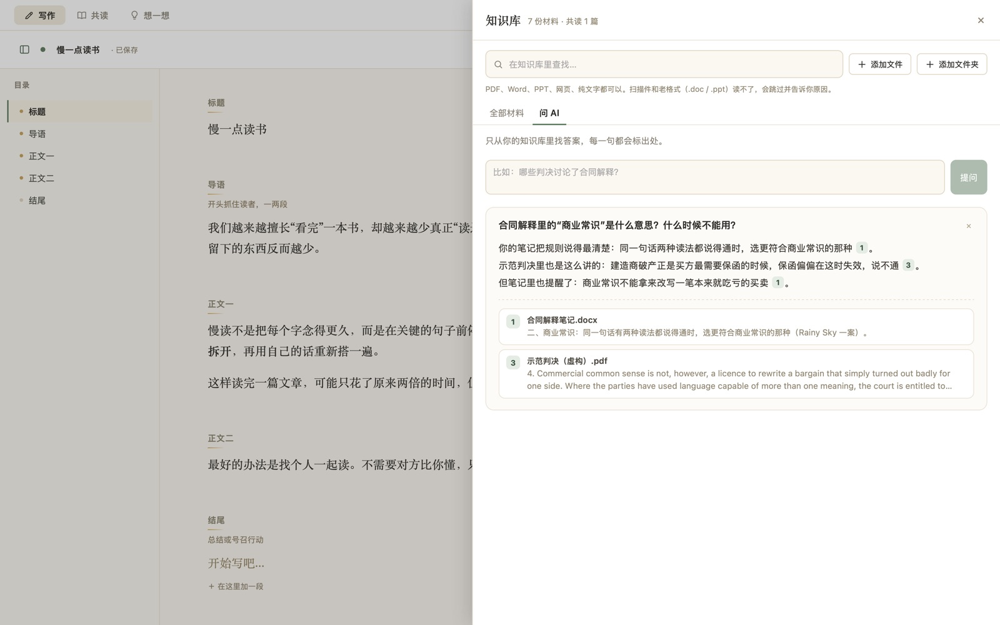
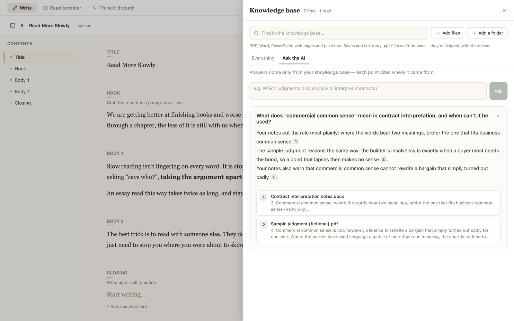
13 家 AI，用你喜欢的那家13 AI providers. Bring the one you like.
填上你自己的 API key 就能用，还能同时请好几家一起工作。手上 key 多的话，在设置里一次粘贴进去，它会自己认出是哪家。Add your own API key and go — and have several of them work at once. Holding a pile of keys? Paste them all into Settings at once and each is matched to its provider.
列表里没有的新模型，也可以在设置里手动填写模型名。AI 的名字和性格都可以自己设定。 Newer models that aren’t listed yet can be typed in by name. You can also give each AI its own name and personality.
你的东西，只在你自己的电脑上Your work stays on your computer
台我们的服务器servers of ours
请求直接发给你选的 AI 服务商，中间不经过任何人。费用也由他们按用量向你收取。Requests go straight to the AI provider you picked, with nobody in between — and they bill you for what you use.
个要注册的账号accounts to create
没有账号系统，不用留邮箱和手机号。下载、打开，就能用。No sign-up, no email, no phone number. Download, open, done.
存在你自己的电脑上on your own computer
文档、聊天记录、批注和 API key 都保存在你自己的电脑里，不会上传到别处。Documents, chats, annotations and API keys are saved on your computer and nowhere else.
三步装好Three steps to install
-
下载并拖进「应用程序」Download and drag into Applications
双击下载好的 .dmg 文件，在弹出的窗口里把 Collab Doc 拖到「应用程序」文件夹上。Double-click the downloaded .dmg, then drag Collab Doc onto the Applications folder in the window that opens.
-
第一次打开会被拦下The first launch gets blocked
在「应用程序」里双击 Collab Doc，系统会提示无法验证开发者。点 完成，先别点「移到废纸篓」。Double-click Collab Doc in Applications. macOS says it can’t verify the developer — click Done, not “Move to Trash”.
-
在系统设置里放行Allow it in System Settings
打开 系统设置 → 隐私与安全性，往下拉到「安全性」，点 仍要打开，再输入开机密码。之后就能像普通 App 一样双击打开了。Open System Settings → Privacy & Security, scroll down to Security, click Open Anyway and enter your Mac password. From then on it opens like any other app.
-
下载并双击安装包Download and double-click the installer
双击下载好的 Collab-Doc-0.3.0-windows-setup.exe。如果 Edge 浏览器说这个文件「不常下载」，点旁边的 … → 保留。Double-click the downloaded Collab-Doc-0.3.0-windows-setup.exe. If Edge says the file “isn’t commonly downloaded”, click … → Keep.
-
看到蓝色提示就点「仍要运行」If a blue warning appears, run it anyway
如果弹出「Windows 已保护你的电脑」，点 更多信息，再点 仍要运行。If you see “Windows protected your PC”, click More info, then Run anyway.
-
从「开始」菜单打开Open it from the Start menu
几秒钟就装好，不用管理员密码。之后在「开始」菜单或桌面上找到 Collab Doc 打开。It installs in a few seconds, with no administrator password. Then find Collab Doc in the Start menu or on your desktop.
-
下载适合你系统的安装包Download the package for your system
Ubuntu、Debian、Linux Mint 等用 .deb；Fedora、openSUSE 等用 .rpm。Ubuntu, Debian, Linux Mint and similar: .deb. Fedora, openSUSE and similar: .rpm.
-
安装Install it
在下载文件夹里打开终端，运行 sudo apt install ./Collab-Doc-0.3.0-linux-amd64.deb（Fedora 用 sudo dnf install ./Collab-Doc-0.3.0-linux-x86_64.rpm）。缺的系统组件会一起自动装上。Open a terminal in your downloads folder and run sudo apt install ./Collab-Doc-0.3.0-linux-amd64.deb (on Fedora, sudo dnf install ./Collab-Doc-0.3.0-linux-x86_64.rpm). Anything missing is installed along with it.
-
在应用菜单里打开Open it from your app menu
装好后在应用菜单里找到 Collab Doc。Collab Doc now shows up in your applications menu.
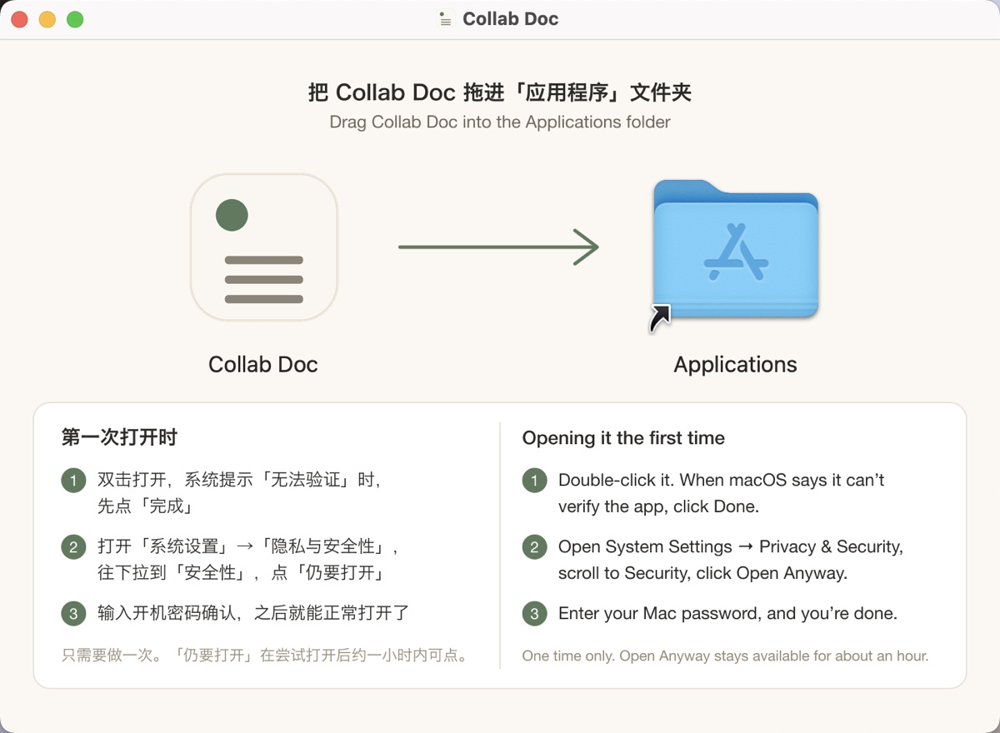
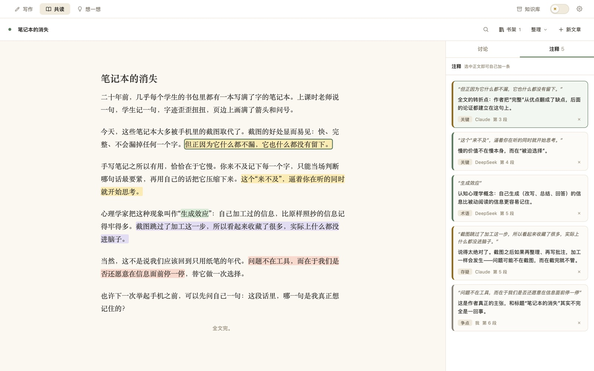
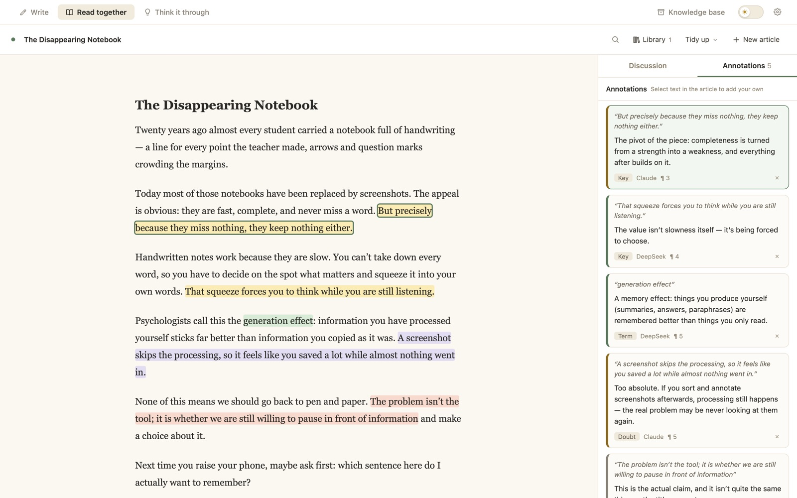
免费就能用，想要更多再升级Free to use. Upgrade when you want more.
两个版本是同一个 App，买了高级版会拿到一个激活码，填进「设置」就解锁。AI 的费用一直是用你自己的 key，直接付给 AI 服务商。Both are the same app: buying Pro gets you an activation code to paste into Settings. The AI itself is always paid with your own key, directly to the provider.
- 写作、共读、想一想三个模式Write, Read together and Think it through
- AI 看稿、批注、讨论，可以同时请好几个 AIThe AI reviews, annotates and discusses — several at once if you like
- 参考资料、全文查找、导出 Word / PDF / MarkdownReference material, full-text search, export to Word / PDF / Markdown
- 知识库最多 10 份材料A knowledge base of up to 10 files
- 13 家 AI 服务商、夜间模式、中英文界面13 AI providers, night mode, English and Chinese
- 免费版的全部功能Everything in Free
- 对照翻译Side-by-side translation
- 读完整理成笔记Study notes from what you read
- 可编辑的思维导图Editable mind maps
- 两个 AI 正反辩论Two AIs debate a question
- 知识库不限数量，能「问 AI」，聊天时 AI 会自己去查An unlimited knowledge base you can ask, and that the AI consults in chat
- 这一年里新出的功能都包含Every new feature released during your year
常见问题Questions
要花钱吗？Does it cost anything?
App 可以免费用。高级版每年 68 元（海外 12 美元），多了对照翻译、整理笔记、思维导图、辩论和不限数量的知识库。不管哪个版本，AI 的费用都是由你选的服务商按用量收取，直接付给他们；很多服务商有免费额度或很便宜的模型。The app is free to use. Pro is $12 a year (68 yuan in China) and adds translation, study notes, mind maps, debates and an unlimited knowledge base. Either way, the AI is billed by the provider you choose, paid directly to them — many offer free credits or inexpensive models.
买了高级版怎么激活？换电脑怎么办？How do I activate Pro? What if I change computers?
付款后会收到一个以 CD- 开头的激活码。打开 App 右上角的齿轮「设置」，在「高级版」里粘贴进去、点「激活」就行，不用联网核对。换了电脑，在新电脑上输入同一个激活码即可，Mac、Windows、Linux 之间也通用。有效期从第一次激活那天算起，一年。After paying you receive an activation code starting with CD-. Open Settings (the gear, top right), paste it under Pro and click Activate — no connection needed. On a new computer — Mac, Windows or Linux — enter the same code. It runs for a year from the day you first activate it.
API key 是什么？去哪儿拿？What’s an API key and where do I get one?
API key 是一串密钥，让 App 能以你的名义调用 AI。在你选的服务商官网注册后，进入开发者后台（一般叫「API Keys」或「API 密钥」）创建一个，复制到 Collab Doc 右上角齿轮「设置」里就行；第一次打开时的引导也会一步步带你做。It’s a secret code that lets the app call the AI on your behalf. Sign up on your chosen provider’s website, create one in their developer console (usually under “API Keys”), and paste it into Collab Doc’s Settings (the gear, top right) — the first-run guide walks you through it.
Mac 上提示「已损坏」或打不开怎么办？On a Mac it says the app is “damaged” or won’t open — what now?
先按上面「安装」里的第 2、3 步操作。如果还是不行，打开「终端」，粘贴下面这行后回车，再双击打开：
xattr -dr com.apple.quarantine "/Applications/Collab Doc.app"Follow steps 2 and 3 under Install first. If it still won’t open, paste this into Terminal, press Return, then double-click the app again:
xattr -dr com.apple.quarantine "/Applications/Collab Doc.app"
哪些电脑能用？Which computers does it run on?
Mac：macOS 12（Monterey）或更新，Apple 芯片和 Intel 芯片用同一个安装包。Windows：Windows 10 和 11（64 位）。Linux：64 位的 Ubuntu 22.04、Debian 12、Fedora 36 或更新的版本。手机和平板暂时没有。Mac: macOS 12 (Monterey) or later, one download for Apple silicon and Intel. Windows: Windows 10 and 11 (64-bit). Linux: 64-bit Ubuntu 22.04, Debian 12, Fedora 36 or newer. There’s no phone or tablet version yet.
Windows 上打开是一片空白？On Windows the window opens blank?
Collab Doc 用的是 Windows 自带的 WebView2 组件来显示界面，Windows 10 和 11 一般都已经有了。如果打开是一片空白，去微软官网搜「WebView2 运行时」装一下，再打开就好。Collab Doc draws its window with Microsoft’s WebView2, which Windows 10 and 11 almost always have. If the window is blank, install the “WebView2 Runtime” from Microsoft’s website and open the app again.
我的文档会被拿去训练 AI 吗？Will my documents be used to train AI?
Collab Doc 自己不收集任何东西，没有我们的服务器。只有你让 AI 看的内容会直接发给你选的服务商，怎么处理由他们的条款决定；在意的话，选一家承诺不拿 API 数据训练的服务商就行。Collab Doc collects nothing, and there’s no server of ours. Only what you ask the AI to look at goes straight to the provider you chose, under that provider’s terms — if it matters to you, pick one that doesn’t train on API data.
AI 能上网查资料吗？Can the AI look things up online?
可以，是可选功能。在设置里填一个 Tavily 的 API key，AI 觉得某个事实需要核实时，会自己先搜一下再回答。Optionally. Add a Tavily API key in Settings, and the AI will search first when it decides a fact needs checking.
界面有英文吗？Is the app available in Chinese?
有。在「设置」最上面可以在中文和英文之间切换，AI 主动写的批注和评论也会跟着换语言。Yes — switch between English and Chinese at the top of Settings, and the AI’s own annotations and comments follow the language you pick.